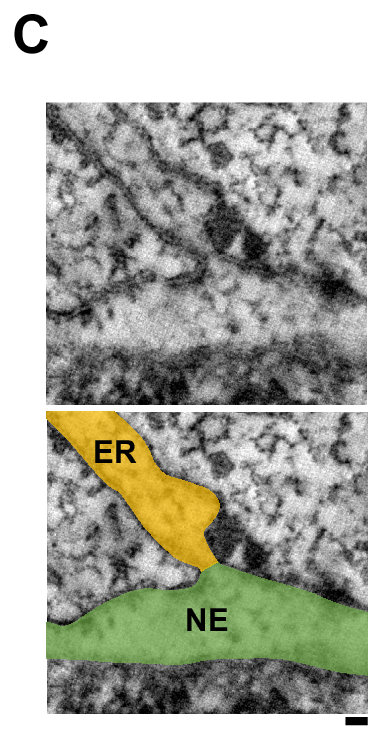
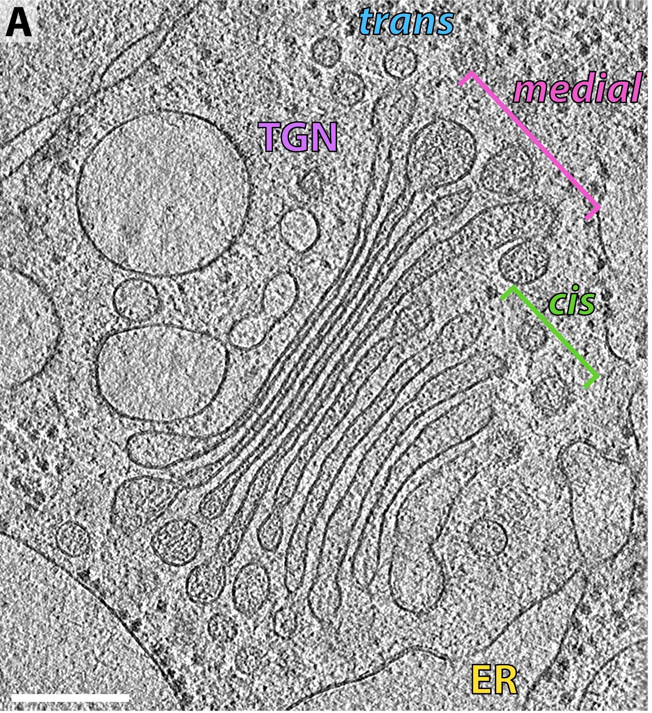
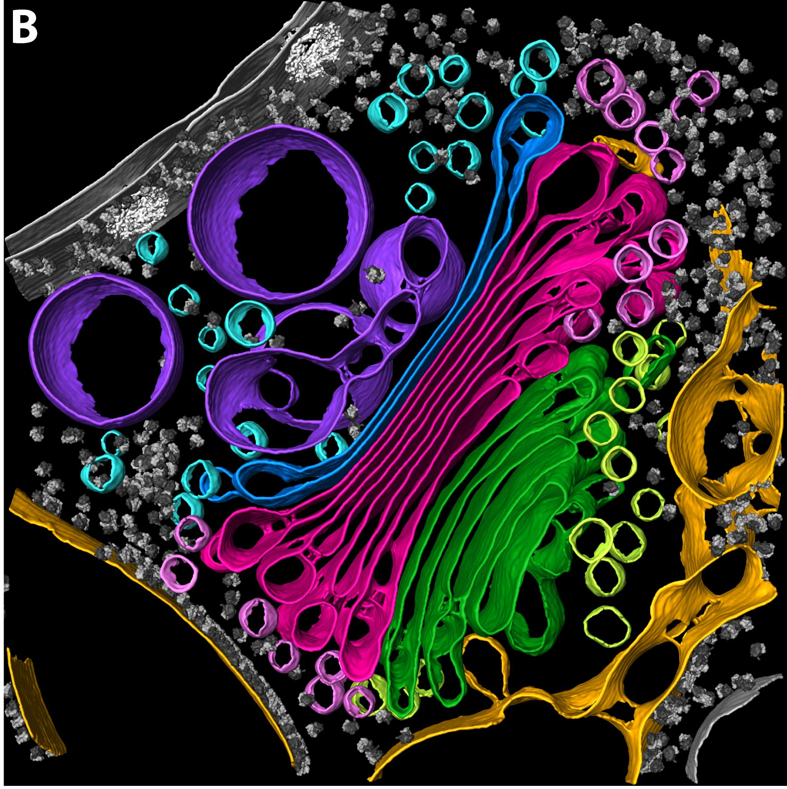
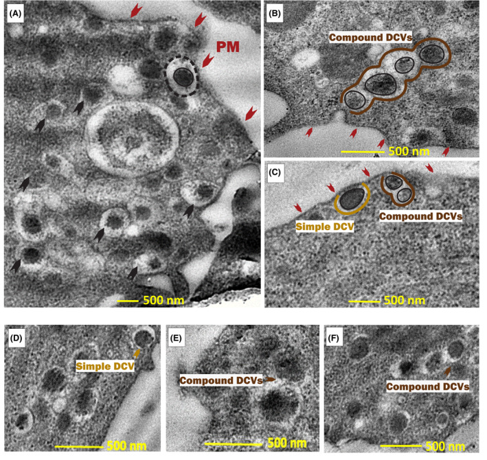

Compartments, stacks and secretory granules
Microscopy reveals selected cellular structures at different resolutions. These three structural studies show independent specimens, not one cell or a continuous ER-to-Golgi-to-release journey.
An ER–nuclear-envelope junction

Reading key: the top image is the raw section; the bottom repeats it with the authors’ ER annotation in orange and nuclear envelope (NE) in green. Follow the orange extension to the narrow central neck where it joins the green outer nuclear membrane. The original 20 nm bar is retained below the annotated image. Colors identify the authors’ membrane interpretation, not natural tissue color.
The source establishes ER–outer nuclear membrane continuity. In general anatomy the ER lumen connects with the perinuclear space, but this section does not establish an open aqueous passage at the neck. It is not an opening into the nucleoplasm. HeLa cells were high-pressure frozen, freeze-substituted and resin embedded; the tomographic section is 250 nm thick. This is fixed cellular architecture, not live membrane motion.
Bragulat-Teixidor, Ishihara, Szücs & Otsuka (2024), Figure 1C and owning caption · CC BY 4.0. Lossless crop (950,550–1330,1295) of the native1752 ×1295 source figure; original C tag, annotations and bar retained. Separate higher-resolution raw source data remain available. Source preparation includes shrinkage; no living dimensions or observed aqueous flow inferred.
A Golgi stack and its source reconstruction
A · Observed tomographic slice

B · Author segmentation of that tomogram

Reading key: A shows the stacked membrane profiles; B is the authors’ corresponding 3D segmentation, rather than a second photograph. Source colors: ER yellow; cis green; medial magenta; trans blue; trans-Golgi network (TGN) purple. Colors identify structures, not their living appearance. Source A/B scale context: 200 nm; A’s original bar is retained and no new B bar is drawn.
A vitrified cryo-FIB lamella from the alga Chlamydomonas reinhardtii. This is an algal Golgi example, not a human specimen. These two panels share a source tomogram; the other studies on this page do not.
Bykov et al. (2017), The structure of the COPI coat determined within the cell, Figure 1A/B · CC BY 4.0. Native 3395 × 2835 publisher JPEG; lossless decoded-pixel crops A (0,0–1620,1770), B (1630,0–3395,1770). Lower panels C–H and intervening gutter omitted; original labels retained.
Dense-core secretory granule profiles

Reading key: DCV means dense-core vesicle. The authors mark the plasma membrane (PM) with red arrows and dense cores with black arrows; their outlines and labels distinguish simple and compound profiles. Original bars: 500 nm. These are the source authors’ annotations.
Rat insulinoma cells, chemically fixed, osmium/uranyl contrasted and resin embedded; sections 50–100 nm thick. Although the paper title refers to human β-cell experiments, these TEM panels are rat INS-1 cells. Static profiles establish morphology, not the kinetics or aqueous-pore topology of an individual fusion event.
Makam et al. (online 2024; volume 2025), tPA-GFP is a reliable probe for detecting compound exocytosis in human pancreatic β-cells, Figure 1A–F · CC BY 4.0. Source 709 × 942 JPEG; lossless decoded-pixel crop (0,0–709,670) excludes quantitative plots G/H. All displayed source bars and labels retained.